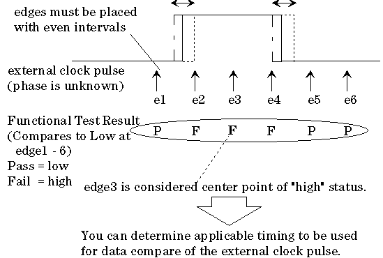
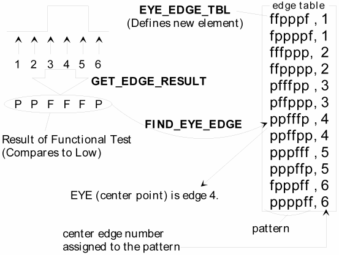

EYE_EDGE_TBL
The EYE_EDGE_TBL API accesses a data container for defining an edge table. This API and related APIs, GET_EDGE_RESULT and FIND_EYE_EDGE, are used to find a point just on center of DUT output signal whose phase is unknown. This point is called EYE EDGEand used for synchronizing data and external clock.
The EYE_EDGE_TBL, GET_EDGE_RESULT and FIND_EYE_EDGE API are related each other to find the center point of the external clock pulse. The center point is called EYE EDGEof the external clock pulse. The EYE EDGEis used to synchronize the data and external clock whose phase is unknown with the tester. You can determine an EYE EDGEfrom the results of the functional test on each edge as shown below.

In the following example, edge1 - 6 are placed with even intervals. Then functional test (compares to low) on is performed for each edge, and the result is used as a set of pass/fail pattern "pfffpp". You can determine the EYE EDGEof the signal by using the edge table which assigns an edge number to pass/fail pattern, and defined by using the EYE_EDGE_TBL.

To use the EYE_EDGE_TBL, GET_EDGE_RESULT and FIND_EYE_EDGE, you must prepare the required setups for functional test, timing setup, level setup, and so on.
This API is defined in the header file /opt/hp93000/soc/prod_com/include/MAPI/EyeEdgeTbl.h.
Class definition
Constructor
EYE_EDGE_TBL(INT num_edges = 6);
Member Functions
EYE_EDGE_TBL& add(const STRING& edge_pattern, const INT edge_num);
void clear();
Constructor
EYE_EDGE_TBL()
EYE_EDGE_TBL(INT num_edges = 6);
This constructor defines a class object which corresponds to the edge table.
num_edges |
Number of edges to be used to determine an EYE EDGE. The range is 1 to 32. |
Member functions
add()
EYE_EDGE_TBL& add(const STRING& edge_pattern, const INT edge_num);
Adds a new element to the end of the edge table. Elements of the edge table consist of edge_pattern and edge_num.
edge_pattern |
Specifies the Pass/Fail pattern of the functional test on each edges (6 edges by default). The functional test must be "Compare to Low". The following characters can be used. FAIL: f, F Not FAIL: p, P, .(period) In an edge table, duplicated pattern cannot be defined. For example, the following patterns can be used:
|
edge_num |
Specifies the EYE EDGE number to be assigned to the edge_pattern. The FIND_EYE_EDGE API looks up the table and returns edge_num of given edge_pattern. In an edge table, duplicated edge number can be assigned to different patterns. |
clear()
void clear();
This member function clears the all elements in the specified edge table.
There are no parameters in this member function.
Example
EYE_EDGE_TBL et;
et.add("ppfffp", 1).
add("pffffp", 1).
add("pppfff", 2).
add("ppffff", 2).
add("fpppff", 3).
add("fppfff", 3).
add("ffpppf", 4).
add("ffppff", 4).
add("fffppp", 5).
add("fffppf", 5).
add("pfffpp", 6).
add("ffffpp", 6);
FUNCTIONAL_TEST();
INT edge = FIND_EYE_EDGE(GET_EDGE_RESULT("clock"),et);This example defines the edge table "et". Then executes functional tests on edge 1-6. The FIND_EYE_EDGE finds the pass/fail pattern from the edge table and returns the EYE EDGE number.